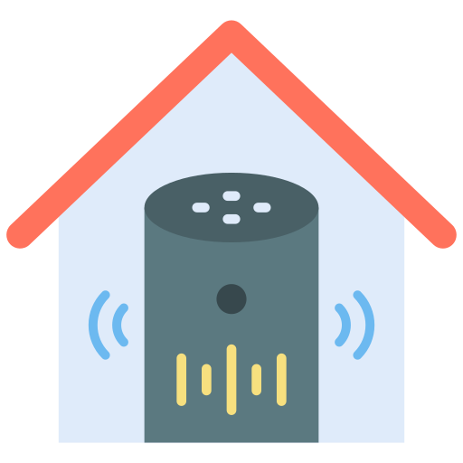

Como os Computadores Funcionam
Computadores são dispositivos eletrônicos complexos que processam dados usando componentes como CPU, RAM e armazenamento. A CPU executa instruções do programa, a RAM armazena dados temporários e os dispositivos de armazenamento mantêm dados permanentemente. O sistema operacional gerencia recursos e permite a execução de aplicativos. A compreensão desses componentes é essencial para entender como os computadores funcionam e como interagir com eles efetivamente.

A Importância da Segurança Online
A segurança online envolve práticas como senhas fortes, autenticação de dois fatores e atualizações regulares de software para proteger contra ameaças como phishing e malware. Conscientização sobre técnicas de engenharia social, que os hackers usam para enganar as pessoas, é crucial. A segurança online não apenas protege dados pessoais, mas também evita roubo de identidade e ataques cibernéticos.
O Mundo dos Jogos Eletrônicos
Jogos eletrônicos variam de simples quebra-cabeças a experiências de mundo aberto. Eles são desenvolvidos por equipes de designers, programadores e artistas que criam histórias envolventes e gráficos impressionantes. Compreender os diferentes gêneros de jogos, desde jogos de aventura até jogos de estratégia, ajuda a apreciar a diversidade dessa forma de entretenimento digital.

Programação para Iniciantes
A programação envolve escrever código usando linguagens como Python, Java ou C++. Os fundamentos incluem variáveis (armazenamento de dados), loops (repetição de instruções) e condicionais (tomada de decisões). A prática regular em projetos simples, como criar um jogo básico ou um site, ajuda a desenvolver habilidades de programação essenciais.

O Poder dos Aplicativos
Aplicativos são programas de software que oferecem funcionalidades específicas, desde organização até entretenimento. Eles são desenvolvidos para plataformas como Android e iOS usando linguagens como Swift e Kotlin. Compreender como os aplicativos são projetados e como podem simplificar tarefas diárias ajuda a aproveitar ao máximo os dispositivos móveis.

A Era dos Dispositivos Móveis
Smartphones e tablets são dispositivos portáteis que integram chamadas, mensagens, internet e aplicativos em um único dispositivo. Sistemas operacionais como Android e iOS oferecem interfaces intuitivas. Além das funcionalidades, é vital entender a segurança móvel, incluindo permissões de aplicativos e configurações de privacidade.

O Mundo das Redes Sociais
Redes sociais são plataformas online para conexão e compartilhamento de conteúdo. Compreender as implicações de privacidade, ética digital e as consequências do cyberbullying é essencial. Conhecer as configurações de privacidade e aprender a discernir entre informações confiáveis e falsas são habilidades essenciais para usuários de redes sociais responsáveis.
Robótica e Inteligência Artificial
Robótica envolve criar robôs que podem realizar tarefas físicas. A inteligência artificial (IA) é a simulação de processos de inteligência humana por sistemas computacionais. A IA inclui aprendizado de máquina, onde os algoritmos podem aprender e melhorar com dados. Compreender como robôs são programados e como a IA é aplicada em campos como diagnóstico médico e reconhecimento de padrões é fundamental.

Realidade Virtual e Realidade Aumentada
Realidade Virtual (RV) oferece experiências imersivas em ambientes simulados, enquanto Realidade Aumentada (RA) adiciona elementos virtuais ao mundo real. Compreender como essas tecnologias são usadas em campos como jogos, medicina e educação amplia a compreensão sobre o futuro da interação humano-computador.
Inovações Tecnológicas no Cotidiano
Inovações como assistentes de voz (por exemplo, Amazon Alexa, Google Assistant) usam IA para responder a comandos de voz, enquanto carros autônomos usam sensores e algoritmos para navegar sem intervenção humana. Compreender o potencial e os desafios dessas inovações, como questões de segurança em carros autônomos e privacidade em assistentes de voz, é crucial para entender seu impacto na sociedade.
